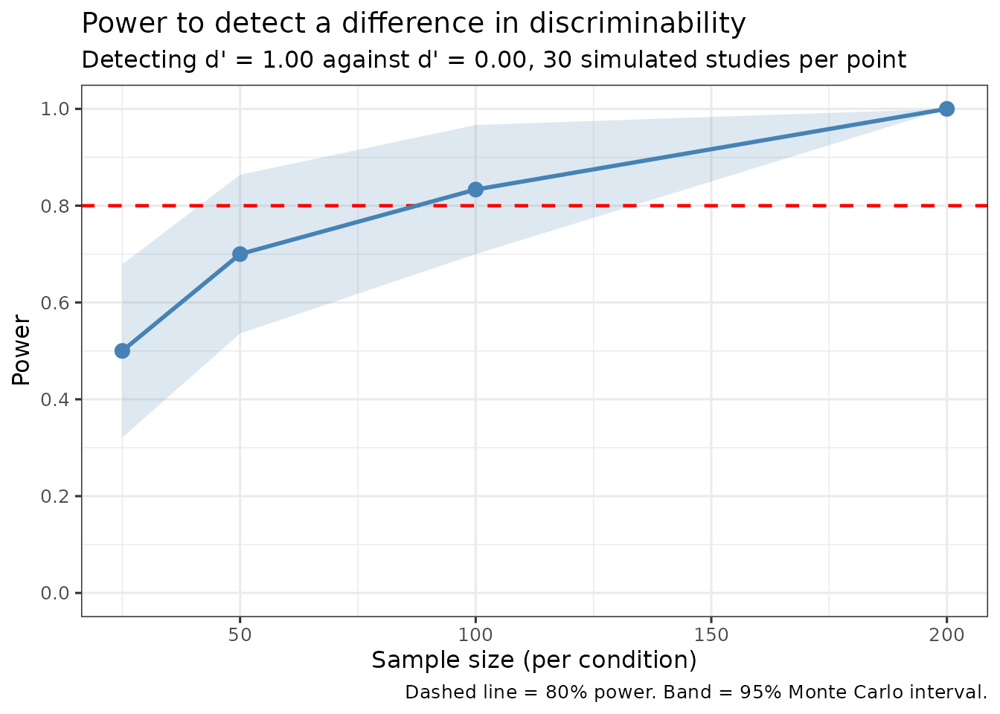
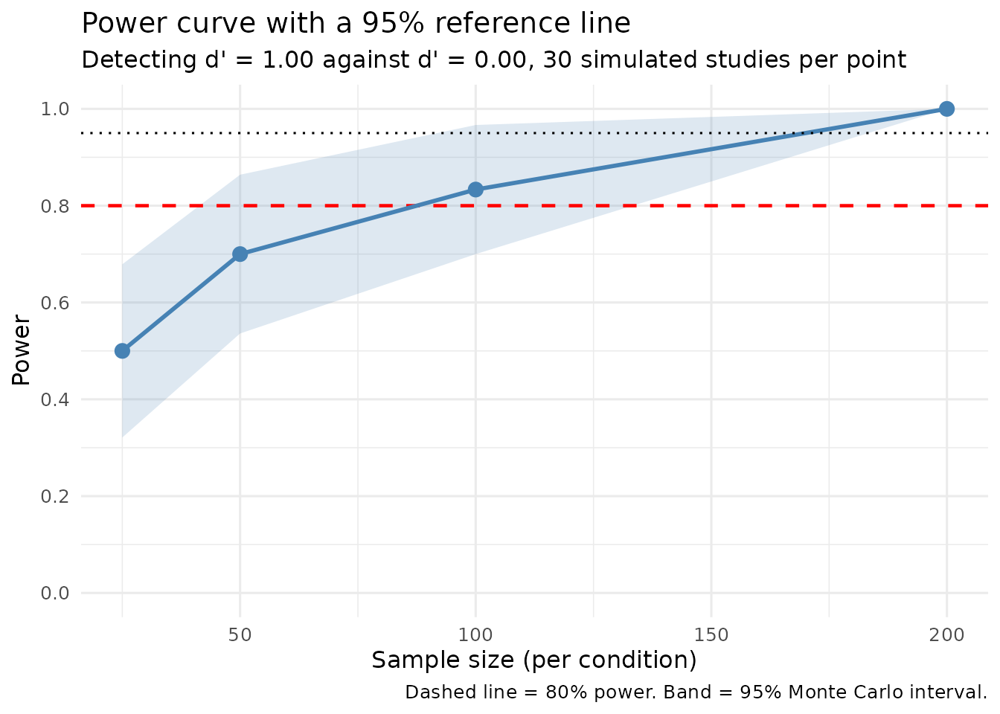
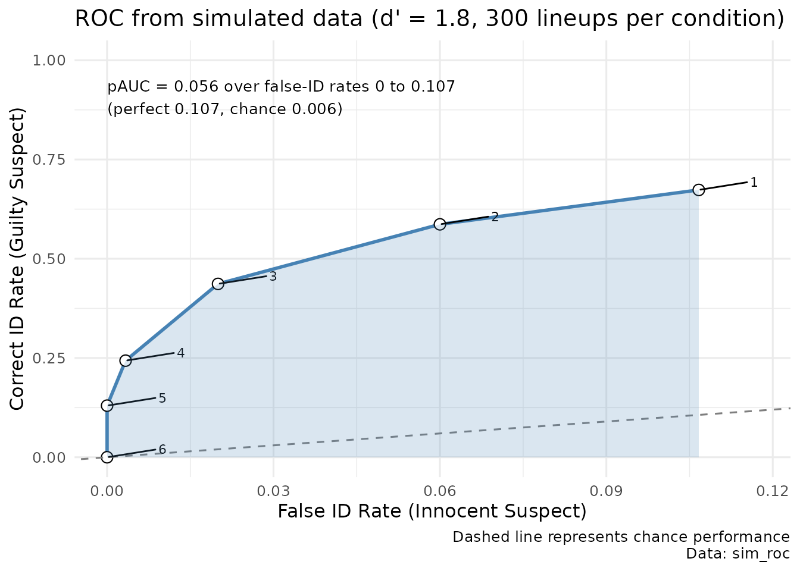
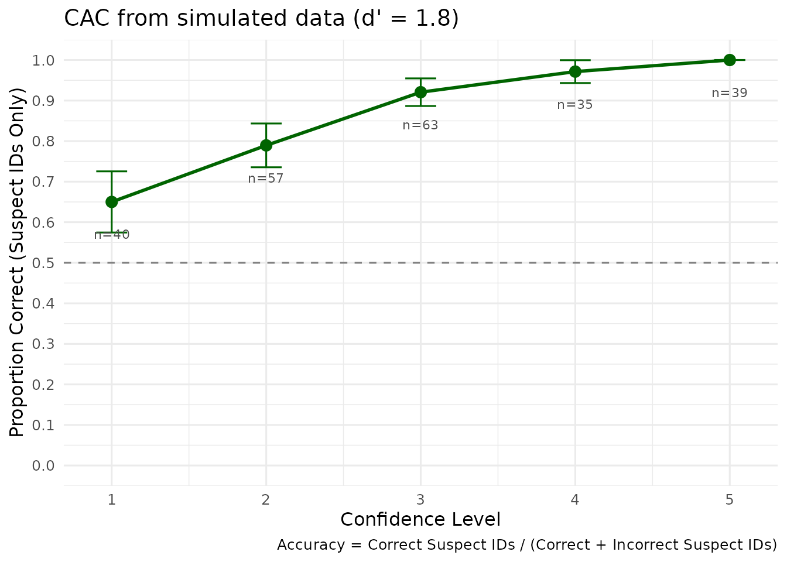

Data Simulation and Power Analysis for Lineup Studies
Colin G. Tredoux
Tamsyn M. Naylor
2026-10-29
Source:vignettes/simulation_power_analysis.Rmd
simulation_power_analysis.RmdAcknowledgement. Large language models supplied by Anthropic and OpenAI were used in preparing this vignette, to assist with checking code, testing the veracity of the approaches described, and on occasion editing the text. Responsibility for the content rests with the authors.
Introduction
Simulation is useful in lineup research for four rather different purposes, and it is worth separating them because they make different demands on the simulation.
- Planning a study. How many participants are needed to detect the effect you expect? This is power analysis, and it needs a hypothesis to test.
- Validating a method. If you generate data with known parameters, does your analysis recover them? This needs data whose true values you control.
- Exploring designs. What happens to identification rates if the lineup has eight members instead of six? This needs only descriptive comparison.
- Teaching. Showing what a criterion shift does to a lineup is easier with simulated data than with a real experiment.
Signal Detection Theory, briefly
Signal detection theory (SDT) is the framework the simulator uses, so it is worth stating what it assumes.
The idea is that a witness viewing a lineup member experiences some degree of memory strength — a sense of familiarity or match to their memory of the culprit. This is treated as a continuous quantity rather than a yes/no judgement. Lineup members who are in fact the culprit tend to generate more strength than innocent members, but the distributions overlap: an unfamiliar face can occasionally feel very familiar, and a genuine culprit can occasionally feel unremarkable.
Two quantities describe this:
- d′ (discriminability) is the separation between the two distributions, measured in standard deviations. It captures how good the witness’s memory is. Guilty suspects are drawn from Normal(d′, 1); foils and innocent suspects from Normal(0, 1).
- The criterion is how much strength the witness requires before they are willing to identify anybody at all. It captures willingness to choose, which is a separate matter from memory quality — a witness with excellent memory may still be reluctant to commit.
Keeping these separate is the central contribution of SDT to this area. Two procedures can produce identical identification rates for quite different reasons: one may improve memory, the other merely make witnesses more willing to choose. Only the first is a genuine improvement.
Decision rules
A lineup differs from a simple recognition test because the witness sees several faces and must decide among them. How the several memory strengths are combined into one decision is an open theoretical question, and the simulator implements four answers to it, following Wixted, Vul, Mickes and Wilson (2018):
| Rule | The witness … |
|---|---|
"max" |
picks the member with the highest strength, and identifies if it clears the criterion. The independent-observations model, and the default. |
"best_rest" |
compares the best member against the average of the others, so a face only stands out if it stands out relative to the lineup. |
"ensemble" |
compares the best member against the average of the whole lineup. A
rescaling of "best_rest"; the two are the same model with
correspondingly rescaled criteria. |
"integration" |
sums strength across all members. |
These are equal-variance, independent-signal versions of those models.
To be clear about a point that has caused confusion: you are not obliged to adopt one of these models to plan a lineup study. They are how this simulator generates data, so if you use it for power analysis you are assuming one of them holds. That assumption is no different in kind from assuming a normal distribution when using a conventional power calculator. If you have pilot data, checking that the simulated identification rates resemble it is a reasonable guard against the assumption doing damage.
Attribution. The decision rules follow Wixted et
al. (2018). The "max", "best_rest" and
"ensemble" implementations were written with reference to
the Python package pyWitness (Mickes et al., 2024), and
adapted into R here; the parameter recovery in
fit_winter_2ht() is checked against it. See
vignette("lineup_memory_models") for the pyWitness bridge
itself.
The criterion, in plainer terms
c_criterion is the strength a lineup member must reach
before the witness will identify anyone. Raise it and witnesses reject
more often; lower it and they choose more often.
One point trips people up, and the guidance in earlier versions of this vignette got it wrong. In textbook SDT, a criterion of 0 is “neutral”. That is not true here, because the criterion applies to the maximum of several members’ strengths, not to a single item. The maximum of six draws from Normal(0, 1) averages about 1.27, so a criterion of 0 is passed by nearly every lineup:
criteria <- c(0, 0.5, 1.0, 1.27, 1.5, 2.0)
rejection_rates <- vapply(criteria, function(cc) {
d <- simulate_lineup_data(n_tp = 800, n_ta = 800, d_prime = 1.5,
c_criterion = cc, lineup_size = 6,
conf_levels = 5, seed = 11)
100 * mean(d$identification[!d$target_present] == "reject")
}, numeric(1))
knitr::kable(
data.frame(`c_criterion` = criteria,
`TA rejection rate (%)` = round(rejection_rates, 1),
check.names = FALSE),
row.names = FALSE,
caption = "Rejection rate in target-absent lineups as the criterion varies, simulated data (800 lineups of size 6 per point, d' = 1.5)."
)| c_criterion | TA rejection rate (%) |
|---|---|
| 0.00 | 1.8 |
| 0.50 | 10.5 |
| 1.00 | 34.6 |
| 1.27 | 52.4 |
| 1.50 | 66.1 |
| 2.00 | 87.2 |
A criterion of 0 rejects almost nothing. The roughly neutral value — where target-absent lineups are rejected about half the time — is near 1.27, which is exactly the expected maximum of six standard normal draws.
That value therefore depends on lineup size, which is why no fixed table of “liberal / neutral / conservative” values can be given:
sizes <- c(4, 6, 8, 10, 12)
set.seed(1)
expected_max <- vapply(sizes, function(k) {
mean(replicate(20000, max(stats::rnorm(k))))
}, numeric(1))
knitr::kable(
data.frame(`Lineup size` = sizes,
`Roughly neutral criterion` = round(expected_max, 2),
check.names = FALSE),
row.names = FALSE,
caption = "Approximately neutral criterion by lineup size: the expected maximum of k standard normal draws."
)| Lineup size | Roughly neutral criterion |
|---|---|
| 4 | 1.03 |
| 6 | 1.27 |
| 8 | 1.42 |
| 10 | 1.54 |
| 12 | 1.63 |
A practical approach is to choose the criterion by the rejection rate it produces, rather than by its nominal value: simulate, look at the rejection rate, and adjust until it resembles the studies you are drawing on.
Basic Data Simulation
sim_data <- simulate_lineup_data(
n_tp = 200, # 200 target-present lineups
n_ta = 200, # 200 target-absent lineups
d_prime = 1.5, # moderate discriminability
c_criterion = 1.0, # moderately conservative for a 6-person lineup
lineup_size = 6,
conf_levels = 5,
seed = 2026
)
head(as.data.frame(sim_data))
#> participant_id target_present lineup_member suspect_pos identification
#> 1 4 TRUE 6 1 filler
#> 2 220 FALSE 0 1 reject
#> 3 285 FALSE 2 1 filler
#> 4 362 FALSE 3 1 filler
#> 5 298 FALSE 3 1 filler
#> 6 44 TRUE 1 1 suspect
#> confidence
#> 1 1
#> 2 1
#> 3 3
#> 4 1
#> 5 2
#> 6 1The output records which lineup member was chosen, not merely whether the choice happened to fall on the suspect:
-
lineup_member: the position chosen, with0for a rejection -
suspect_pos: the suspect’s position -
identification:"suspect","filler"or"reject", derived from the two columns above byclassify_lineup_choices()
This matters because foils are not interchangeable. By default the
simulator draws every foil from the same distribution, which makes them
statistically equivalent even though they are simulated separately. Real
lineups are not like that: some foils are plausible alternatives to the
suspect and others are barely considered. Use foil_bias to
give each foil its own mean strength:
uneven <- simulate_lineup_data(
n_tp = 400, n_ta = 400, d_prime = 1.5, c_criterion = 1.0,
lineup_size = 6, conf_levels = 5,
# Foil 2 is a strong alternative; foil 6 is nearly a null foil
foil_bias = c(0.5, 0.25, 0.0, -0.4, -1.2),
seed = 2026
)
lineup_table(uneven$lineup_member[uneven$lineup_member > 0],
k = 6, suspect_pos = 1)
#> Lineup choices (k = 6, N = 616)
#>
#> pos: 1* 2 3 4 5 6
#> cnt: 259 148 99 74 31 5
#>
#> * = nominated suspectA lineup like this is unfair in a way that the collapsed
"filler" label cannot express: a witness who rejects the
suspect has far fewer real alternatives than the nominal size of six
suggests. Simulating with foil_bias is the way to ask what
that does to any measure you care about.
Power Analysis
What the function does
Power is the probability that a study of a given size detects an effect that is really there. Estimating it by simulation means: specify the effect, generate many studies of that size, run the analysis you intend to use, and count how often it reaches significance.
That last step needs a hypothesis test, which is why
simulate_power_analysis() requires two conditions.
d_prime is the condition of interest and
d_prime_null is what it is being compared against. The
default d_prime_null = 0 asks how often a study of this
size could show that the procedure discriminates better than chance;
setting it to a non-zero value asks the more usual question of how often
two working procedures could be told apart.
Each simulated study is tested with compare_pauc(), a
bootstrap comparison of partial area under the ROC curve, and power is
the proportion of studies whose p-value falls below
alpha.
Note on earlier versions. Before r4lineups 2.1.0.9000 this function computed power as the proportion of simulations in which the pAUC exceeded zero. Since an area is always positive, that proportion was always 1, and the power curve was a flat line at the top of the plot regardless of sample size or effect size. If you have output from an earlier version, discard it.
A worked power analysis
The question: how many participants per condition are needed to show that a procedure with d′ = 1.0 discriminates better than chance?
power_result <- simulate_power_analysis(
sample_sizes = c(25, 50, 100, 200),
d_prime = 1.0,
d_prime_null = 0,
n_simulations = 30, # small, so this vignette builds quickly
n_bootstrap = 60, # likewise
conf_levels = 5,
alpha = 0.05,
seed = 2026,
verbose = FALSE
)
knitr::kable(
as.data.frame(power_result)[, c("sample_size", "power", "power_se",
"mean_effect")],
digits = 3, row.names = FALSE,
caption = "Power to detect d' = 1.0 against chance, 30 simulated studies per sample size."
)| sample_size | power | power_se | mean_effect |
|---|---|---|---|
| 25 | 0.367 | 0.088 | 0.033 |
| 50 | 0.733 | 0.081 | 0.026 |
| 100 | 0.833 | 0.068 | 0.026 |
| 200 | 1.000 | 0.000 | 0.032 |
Two things to read off. Power rises with sample size, as it must,
crossing 80% somewhere between 25 and 50 participants per condition. And
mean_effect — the average observed difference in pAUC —
stays roughly constant across sample sizes, which is the sanity check:
sample size does not change the size of an effect, only how precisely it
is measured, and sd_effect duly shrinks.
Plotting, and adjusting the plot
plot() returns an ordinary ggplot2
object, so it can be modified like any other:
p <- plot(power_result)
library(ggplot2)
p +
geom_hline(yintercept = 0.95, linetype = "dotted") +
labs(title = "Power curve with a 95% reference line") +
theme_minimal(base_size = 12)
The shaded band is the Monte Carlo interval — the uncertainty in the power estimate arising from having run only 30 simulations. It is wide here, and deliberately so: with 30 simulations the standard error of an estimated power near 0.5 is about 0.09, so apparent dips between adjacent points may be nothing but noise. If a power curve looks ragged, the usual remedy is more simulations, not a different interpretation. For planning a real study, 500 to 1000 simulations per sample size is a more reasonable setting, at proportionately greater cost.
Method Validation: Parameter Recovery
A different use of simulation: generate data with a known d′, fit a model, and check that the model’s parameters move as they should. Here the 2-high-threshold model of Winter et al. is fitted to data simulated across a range of d′.
true_dprimes <- c(0.5, 1.0, 1.5, 2.0, 2.5, 3.0)
recovery <- do.call(rbind, lapply(true_dprimes, function(dp) {
dat <- as.data.frame(simulate_lineup_data(
n_tp = 500, n_ta = 500, d_prime = dp, c_criterion = 1.0,
lineup_size = 6, conf_levels = 5, seed = 321
))
fit <- fit_winter_2ht(dat, lineup_size = 6,
target_present = "target_present",
identification = "identification")
data.frame(`True d'` = dp,
dP = round(fit$parameters[["dP"]], 3),
dA = round(fit$parameters[["dA"]], 3),
check.names = FALSE)
}))
knitr::kable(
recovery, row.names = FALSE,
caption = "2HT detection parameters recovered from data simulated at known d', 500 lineups per condition."
)| True d’ | dP | dA |
|---|---|---|
| 0.5 | 0.112 | 0.007 |
| 1.0 | 0.280 | 0.034 |
| 1.5 | 0.485 | 0.066 |
| 2.0 | 0.664 | 0.148 |
| 2.5 | 0.804 | 0.202 |
| 3.0 | 0.917 | 0.177 |
The detection parameter dP increases monotonically with
the d′ used to generate the data, from about 0.11 to about 0.92. That is
the result the exercise is looking for. Note that dP is not
on the same scale as d′ and should not be expected to equal it — the two
models parameterise memory differently, and what validates the analysis
is that the ordering and the spacing are recovered, not that the numbers
coincide.
The model fits without difficulty on data of this kind. If a fit does
fail, resist the temptation to wrap it in tryCatch() and
report “did not converge”, because that will also swallow genuine errors
such as a mis-specified column name, and you will spend a long time
looking for a convergence problem that is not there.
Comparing Experimental Designs
Simulation can also answer descriptive questions about design. Here: what does lineup size do to identification rates, holding memory and willingness to choose constant?
The comparison is only interpretable if the criterion is adjusted for size. As shown earlier, a fixed criterion becomes progressively more liberal as the lineup grows, so comparing sizes at a single criterion confounds the two things we are trying to separate. We therefore set each criterion to the expected maximum for its lineup size.
sizes <- c(4, 6, 8, 10, 12)
design <- do.call(rbind, lapply(sizes, function(k) {
# Criterion matched to lineup size, so willingness to choose is held constant
crit <- mean(replicate(5000, max(stats::rnorm(k))))
d <- as.data.frame(simulate_lineup_data(
n_tp = 500, n_ta = 500, d_prime = 1.5, c_criterion = crit,
lineup_size = k, conf_levels = 5, seed = 77
))
tp <- d[d$target_present, ]; ta <- d[!d$target_present, ]
data.frame(
`Lineup size` = k,
`Criterion used` = round(crit, 2),
`Correct ID rate (%)` = round(100 * mean(tp$identification == "suspect"), 1),
`False ID rate (%)` = round(100 * mean(ta$identification == "suspect"), 1),
check.names = FALSE
)
}))
knitr::kable(
design, row.names = FALSE,
caption = "Identification rates by lineup size at a size-matched criterion, simulated data (500 target-present and 500 target-absent lineups per size, d' = 1.5)."
)| Lineup size | Criterion used | Correct ID rate (%) | False ID rate (%) |
|---|---|---|---|
| 4 | 1.02 | 61.8 | 9.8 |
| 6 | 1.27 | 48.4 | 9.0 |
| 8 | 1.43 | 47.0 | 6.8 |
| 10 | 1.54 | 39.8 | 3.2 |
| 12 | 1.65 | 38.0 | 4.2 |
The false identification rate falls as the lineup grows, which is the protective effect a larger lineup is meant to provide: an innocent suspect is one of more alternatives, so mistaken choices are spread more thinly. The correct identification rate is far more stable, since it depends on the culprit standing out rather than on how many foils surround them. This is the trade-off that motivates the differing lineup sizes used in practice — six is common in North American research, while police forces in the United Kingdom typically use nine foils plus the suspect, and some jurisdictions use twelve members or more.
Note that this simulation assumes every foil is equally plausible.
Adding foil_bias would show the protection eroding, because
a lineup of twelve in which eight are never chosen offers the protection
of a much smaller one. That is the effective-size problem, and it is
treated in the main vignette.
Integration with r4lineups Analyses
Simulated data works with the analysis functions directly. Running them on data whose true parameters you know is also the cheapest way to check that an analysis behaves as you expect before you point it at real data.
sim_roc <- simulate_lineup_data(
n_tp = 300, n_ta = 300, d_prime = 1.8,
c_criterion = 1.0, conf_levels = 5, seed = 5
)ROC Analysis
roc_result <- make_roc(sim_roc, lineup_size = 6, show_plot = FALSE)
print(roc_result)
#>
#> === Lineup ROC Analysis ===
#>
#> Partial AUC: 0.056
#> Target-present trials (N): 300
#> Target-absent trials (N): 300
#> Lineup size: 6
#> Confidence levels: 5
#>
#> ROC Data:
#> # A tibble: 6 × 5
#> confidence correct_id_rate false_id_rate n_correct_ids n_false_ids
#> <dbl> <dbl> <dbl> <dbl> <dbl>
#> 1 0 0 0 0 0
#> 2 5 0.13 0 39 0
#> 3 4 0.243 0.00333 73 1
#> 4 3 0.437 0.02 131 6
#> 5 2 0.587 0.06 176 18
#> 6 1 0.673 0.107 202 32
#>
#> Plot: use plot(x), or save the object and extract x$plotmake_roc() returns an object with a plot()
method, which yields a ggplot object you can extend like any other:
plot(roc_result) +
labs(title = "ROC from simulated data (d' = 1.8, 300 lineups per condition)") +
theme_minimal(base_size = 12)
CAC Analysis
The confidence-accuracy characteristic plots accuracy against confidence, for suspect identifications only.
cac_result <- make_cac(sim_roc, show_plot = FALSE)
print(cac_result)
#>
#> === Lineup CAC Analysis ===
#>
#> Overall Accuracy: 0.863
#> Total Suspect IDs: 234
#> Lineup size: 6
#>
#> CAC Data:
#> # A tibble: 5 × 6
#> confidence n_correct n_incorrect n_total accuracy se
#> <chr> <int> <int> <int> <dbl> <dbl>
#> 1 1 26 14 40 0.65 0.0754
#> 2 2 45 12 57 0.789 0.0540
#> 3 3 58 5 63 0.921 0.0341
#> 4 4 34 1 35 0.971 0.0282
#> 5 5 39 0 39 1 0
#>
#> Plot: use plot(x), or save the object and extract x$plot
plot(cac_result) +
labs(title = "CAC from simulated data (d' = 1.8)") +
theme_minimal(base_size = 12)
Accuracy rises across the confidence bins, from about 65% at the lowest to 100% at the highest. It should: the data were generated by a model in which confidence is a monotone function of memory strength, and memory strength is what drives accuracy. Confirming that the CAC recovers the relationship the simulator put in is a useful check that both are behaving.
RAC Analysis
The response-time analogue requires
include_response_time = TRUE, which generates times from a
simple model in which stronger evidence yields faster responses, with
substantial noise added.
sim_rac <- simulate_lineup_data(
n_tp = 1000, n_ta = 1000, d_prime = 1.5, c_criterion = 1.0,
conf_levels = 5, include_response_time = TRUE, seed = 6
)
# Bins must match the data. These simulated times run from roughly 2.5 to 9.5
# seconds, so bins extending to 20 seconds would leave the upper ones empty.
round(quantile(sim_rac$response_time, c(0, 0.25, 0.5, 0.75, 1), na.rm = TRUE))
#> 0% 25% 50% 75% 100%
#> 1628 5279 6100 6906 11167
rac_result <- make_rac(sim_rac, time_bins = c(0, 4500, 5500, 6500, 12000),
show_plot = FALSE)
print(rac_result)
#>
#> === Lineup RAC Analysis ===
#>
#> Overall Accuracy: 0.832
#> Total Suspect IDs: 710
#> Lineup size: 6
#>
#> RAC Data:
#> # A tibble: 4 × 7
#> response_time mean_time n_correct n_incorrect n_total accuracy se
#> <chr> <dbl> <int> <int> <int> <dbl> <dbl>
#> 1 [0,4500] 3928. 82 9 91 0.901 0.0313
#> 2 (4500,5500] 5031. 177 38 215 0.823 0.0260
#> 3 (5500,6500] 5958. 185 43 228 0.811 0.0259
#> 4 (6500,12000] 7113. 147 29 176 0.835 0.0280
#>
#> Plot: save this object first, then extract it with x$plotThe fastest responders are the most accurate, at about 90% against roughly 82% for everyone else, after which the relationship flattens. That is a weaker and less orderly pattern than the CAC above, and the reason is worth noting: the simulator’s response-time model is deliberately simple, and the noise it adds is of comparable size to the systematic component. Do not read this as evidence about response times in real witnesses — it demonstrates the mechanics of the analysis, not a substantive finding.
Choosing bins is the part that needs care. Bins fixed in advance without reference to the data will often be empty at one end, and an accuracy estimated from one or two observations will dominate the plot while meaning nothing. Inspecting the quantiles first, as above, is the simplest guard.
Full ROC Analysis
Where make_roc() uses suspect identifications,
make_fullroc() uses every response, including foil
identifications and rejections.
fullroc_result <- make_fullroc(sim_roc, lineup_size = 6, show_plot = FALSE)
print(fullroc_result)
#>
#> === Full Lineup ROC Analysis (Smith & Yang, 2020) ===
#>
#> Full AUC: 0.83
#> Target-present trials (N): 300
#> Target-absent trials (N): 300
#> Lineup size: 6
#> Ordering method: diagnosticity
#> Operating points: 11
#>
#> ROC Data (first 10 points):
#> cumulative_hit_rate cumulative_false_alarm_rate evidence_label
#> 1 0.0000000 0.000000000 origin
#> 2 0.1300000 0.000000000 suspect_5
#> 3 0.2433333 0.003333333 suspect_4
#> 4 0.4366667 0.020000000 suspect_3
#> 5 0.5866667 0.060000000 suspect_2
#> 6 0.6733333 0.106666667 suspect_1
#> 7 0.7500000 0.200000000 filler_3
#> 8 0.7633333 0.223333333 filler_4
#> 9 0.8233333 0.396666667 filler_2
#> 10 0.9033333 0.646666667 filler_1
#>
#>
#> Diagnosticity Table (ordered by evidence strength):
#> evidence_label hit_rate false_alarm_rate diagnosticity_ratio
#> suspect_5 0.13000000 0.000000000 130.0000000
#> suspect_4 0.11333333 0.003333333 34.0000000
#> suspect_3 0.19333333 0.016666667 11.6000000
#> suspect_2 0.15000000 0.040000000 3.7500000
#> suspect_1 0.08666667 0.046666667 1.8571429
#> filler_3 0.07666667 0.093333333 0.8214286
#> filler_4 0.01333333 0.023333333 0.5714286
#> filler_2 0.06000000 0.173333333 0.3461538
#> filler_1 0.08000000 0.250000000 0.3200000
#> reject_1 0.09666667 0.350000000 0.2761905
#> filler_5 0.00000000 0.003333333 0.0000000
#>
#> Plot: use plot(x), or save the object and extract x$plotBecause it uses the whole response distribution rather than a
truncated region, the full ROC extends across the entire
false-identification range and yields an ordinary AUC rather than a
partial one. See vignette("fullroc_analysis") for the
argument behind it.
Choosing Parameter Values
These are starting points rather than rules, and they are worth revisiting against whatever literature is closest to your own design.
Discriminability (d′). Values around 1.0 are weak, 1.5 moderate, and 2.0 to 2.5 strong. Values above 3.0 are rarely observed in eyewitness studies, and a simulation resting on one will produce optimistic sample size estimates. If in doubt, plan for the smaller effect: a study powered for d′ = 1.0 will comfortably detect d′ = 2.0, whereas the reverse is not true.
Criterion. Do not choose this by its nominal value. Choose it by the rejection rate it produces, as described earlier, and remember the neutral point scales with lineup size.
Lineup size. Six is the most common in North American research; UK practice uses nine foils with the suspect, and some jurisdictions use twelve or more. Use whatever matches the procedure you are studying.
Number of simulations. The Monte Carlo standard
error of an estimated power is at most
sqrt(0.25 / n_simulations), which is about 0.05 at 100
simulations and 0.016 at 1000. Choose based on how precisely you need to
locate the sample size, not by convention.
Seeds. Set one, and report it. Every simulation in this vignette is seeded, which is why it produces identical output each time it is built.
Summary
Key functions:
-
simulate_lineup_data(): generate lineup data, withfoil_biasfor foils that are not interchangeable -
simulate_power_analysis(): power to detect a difference in discriminability -
classify_lineup_choices(): derive identification outcomes from raw choices
Points worth carrying away:
- Power analysis needs a hypothesis test, and therefore two conditions.
- The criterion is a threshold on the maximum of several strengths, so its neutral value is not zero and depends on lineup size.
- A ragged power curve usually means too few simulations, and the Monte Carlo band on the plot tells you whether that is the explanation.
- Simulate foils individually if the question touches lineup fairness at all.
References
Mickes, L., Seale-Carlisle, T. M., Chen, X., & Boogert, S. (2024). pyWitness 1.0: A python eyewitness identification analysis toolkit. Behavior Research Methods, 56, 1533-1550.
Wixted, J. T., & Mickes, L. (2012). The field of eyewitness memory should abandon probative value and embrace receiver operating characteristic analysis. Perspectives on Psychological Science, 7(3), 275-278.
Wixted, J. T., Vul, E., Mickes, L., & Wilson, B. M. (2018). Models of lineup memory. Cognitive Psychology, 105, 81-114.
Further Reading
-
?simulate_lineup_dataand?simulate_power_analysisfor full parameter documentation -
vignette("model_comparison")for comparing memory models -
vignette("pauc_statistical_comparison")for the pAUC test used here